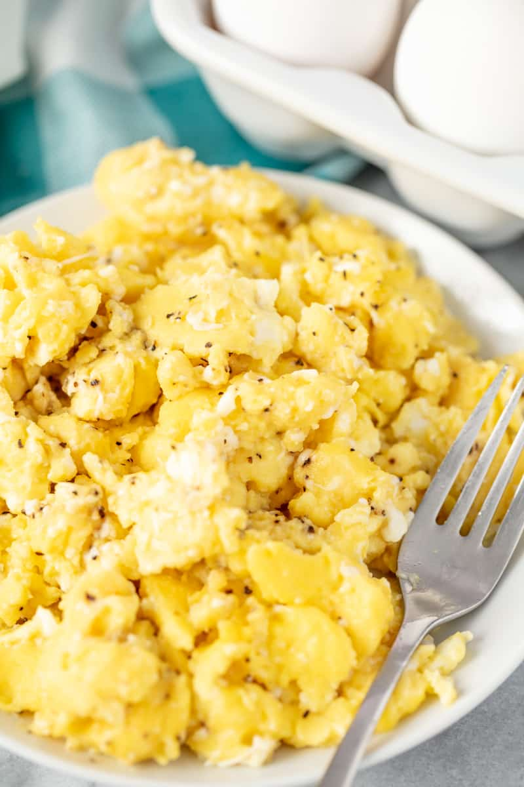

Scrambled Eggs *Easy*

- 4 Eggs
- 1/4 cup milk
- salt and pepper, as desired
- 2 tsp. butter
- BEAT eggs, milk, salt and pepper in medium bowl until blended.
- HEAT butter in large nonstick skillet over medium heat until hot. POUR IN egg mixture. As eggs begin to set, GENTLY PULL the eggs across the pan with a spatula, forming large soft curds.
- CONTINUE cooking – pulling, lifting and folding eggs – until thickened and no visible liquid egg remains. Do not stir constantly. REMOVE from heat. SERVE immediately.